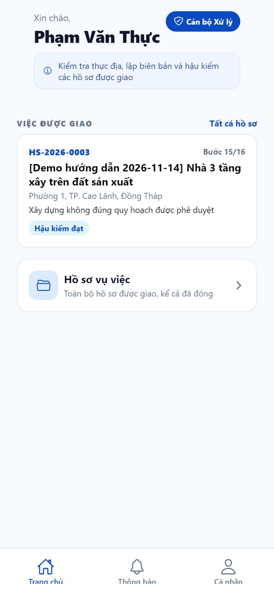
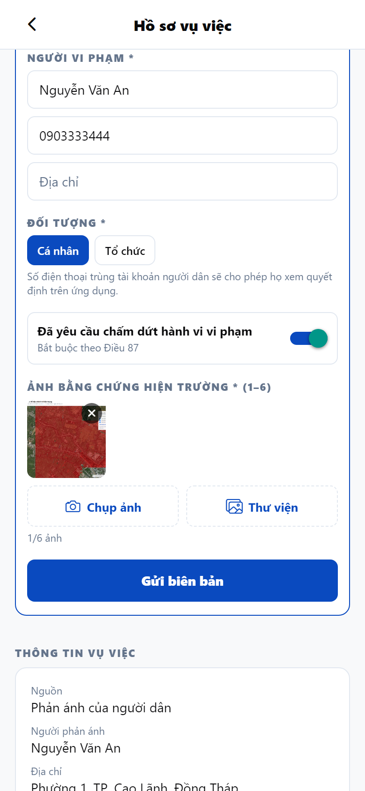
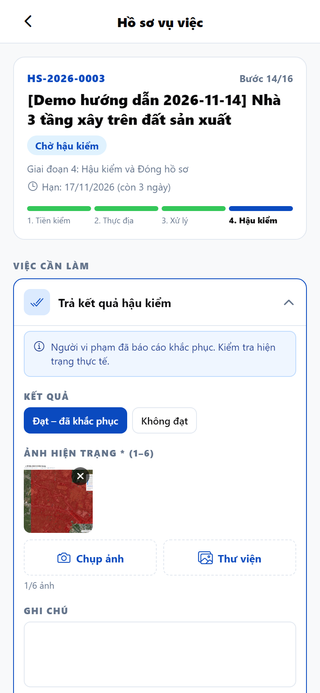

flowchart TD
TB["Thông báo: có phiếu giao việc"] --> NV["6. Nhận việc, đến hiện trường"]
NV --> AN["7. Chụp ảnh bằng chứng"]
AN --> BB["8. Lập biên bản, gửi hồ sơ"]
BB --> CQL["Cán bộ Quản lý rà soát"]
CQL -->|Trả lại bổ sung| BB
CQL --> QD["Quyết định xử phạt"]
BB -.->|Công trình vẫn thi công| TT["Vẫn tiếp tục thi công"]
QD -.->|Công trình vẫn thi công| TT
QD --> YC["Thông báo: yêu cầu hậu kiểm"]
YC --> HK["14–15. Hậu kiểm, trả kết quả"]
HK -->|Đạt| DONG["Cán bộ Quản lý đóng hồ sơ"]
HK -->|Không đạt| KP["Người vi phạm khắc phục tiếp"]
Cho phép trình duyệt dùng camera và vị trí khi được hỏi. Bạn cần camera để chụp ảnh bằng chứng.
1.2. Trang chủ — Việc được giao

Hình 1 — Trang chủ Cán bộ Xử lý: danh sách Việc được giao
Mục Việc được giao liệt kê hồ sơ đang chờ bạn. Mỗi thẻ ghi mã hồ sơ, bước, địa chỉ, hành vi, trạng thái.
Bấm một thẻ để mở hồ sơ.
Bấm Hồ sơ vụ việc (hoặc Tất cả hồ sơ) để xem mọi hồ sơ được giao, kể cả đã đóng.
Trong hồ sơ, khu Việc cần làm chỉ hiện các nút bạn được bấm ở bước hiện tại. Bấm một nút để mở form của nó.
Bạn nhận thông báo khi được giao việc, khi biên bản bị trả lại, và khi có yêu cầu hậu kiểm hoặc kiểm tra sau cấp phép.
2. Bước 6 — Nhận việc, đến hiện trường
Xác nhận đã nhận phiếu giao việc.
Mở hồ sơ có trạng thái Đã giao việc.
Đọc phần Giao việc: hạn kiểm tra và chỉ đạo của Cán bộ Quản lý.
Xem Thông tin vụ việc: địa chỉ, tọa độ, tờ/thửa, loại đất, ảnh phản ánh.
Ở Việc cần làm, bấm Nhận việc, đến hiện trường, rồi bấm nút cùng tên để xác nhận.
Hồ sơ chuyển sang Đang kiểm tra thực địa. Người phản ánh nhận thông báo "cán bộ đã đến hiện trường".
3. Bước 7–8 — Chụp ảnh, lập biên bản
Thu thập bằng chứng, lập biên bản hiện trường, gửi hồ sơ cho Cán bộ Quản lý.

Hình 2 — Phần cuối form biên bản: người vi phạm, đối tượng, yêu cầu chấm dứt, ảnh bằng chứng
Ở Việc cần làm, bấm Lập biên bản hiện trường.
Nhập Số biên bản, ví dụ 12/BB-VPHC.
Nhập Nội dung vi phạm: mô tả hiện trạng, hành vi.
Nhập Diện tích vi phạm (m²) nếu đo được.
Chọn Hành vi vi phạm (1 trong 5 trường hợp). Hành vi gợi ý từ bước tiền kiểm đã chọn sẵn; sửa nếu thực tế khác.
Chọn Loại công trình (a, b, c, d) và Tình trạng thi công: Đang thi công hoặc Đã thi công xong.
Nhập Người vi phạm: họ tên hoặc tên tổ chức, số điện thoại, địa chỉ.
Chọn Đối tượng: Cá nhân hoặc Tổ chức.
Giữ bật Đã yêu cầu chấm dứt hành vi vi phạm. Mục này bắt buộc theo Điều 87; tắt đi thì không gửi được.
Thêm Ảnh bằng chứng hiện trường: bấm Chụp ảnh để chụp bằng camera, hoặc Thư viện. Cần từ 1 đến 6 ảnh.
Bấm Gửi biên bản. Hồ sơ chuyển sang Chờ ra quyết định. Cán bộ Quản lý nhận thông báo.
Số điện thoại người vi phạm rất quan trọng. Nếu trùng số của một tài khoản Người dân, người đó nhận quyết định trên app và tự gửi báo cáo khắc phục. Nếu không trùng, cán bộ phải nhập thay. Tình trạng "Đang thi công" với Case 1, 2 sẽ mở nhánh xin cấp phép theo Điều 85 khi ra quyết định.
Khi biên bản bị trả lại
Ở bước 9, Cán bộ Quản lý có thể trả lại bổ sung biên bản. Hồ sơ quay về Đang kiểm tra thực địa và bạn nhận thông báo.
Mở hồ sơ, đọc nội dung cần bổ sung trong Dòng thời gian.
Bấm Lập biên bản hiện trường. Các ô đã nhập trước đó được giữ lại.
Sửa, chụp thêm ảnh, rồi bấm Gửi biên bản.
4. Vẫn tiếp tục thi công (Case 5)
Dùng khi đã lập biên bản và yêu cầu dừng, nhưng công trình vẫn tiếp tục xây.
Nút Vẫn tiếp tục thi công có ở các trạng thái: Chờ ra quyết định, Chờ cấp/điều chỉnh giấy phép, Chờ khắc phục.
Mở hồ sơ. Ở Việc cần làm, bấm Vẫn tiếp tục thi công.
Đọc khung cảnh báo để biết khoản áp dụng.
Nhập Mô tả hiện trạng (bắt buộc).
Thêm tối đa 3 ảnh hiện trường.
Bấm Ghi nhận vẫn tiếp tục thi công.
Thời điểm ghi nhận
Kết quả
Trước khi có quyết định
Hồ sơ đổi sang hành vi "Tiếp tục xây dựng sau khi đã bị lập biên bản" (khoản 11 Điều 25). Khung phạt cao hơn và có hình thức bổ sung.
Sau khi đã có quyết định
Ghi nhận tái phạm theo khoản 12 Điều 25 để Cán bộ Quản lý xử lý tiếp.
5. Bước 14–15 — Hậu kiểm
Kiểm tra lại hiện trường sau khi người vi phạm báo cáo đã khắc phục.

Hình 3 — Trả kết quả hậu kiểm: chọn kết quả, chụp ảnh hiện trạng
Khi Cán bộ Quản lý yêu cầu hậu kiểm, bạn nhận thông báo. Hồ sơ ở trạng thái Chờ hậu kiểm, ghi hạn và số ngày còn lại.
Đến hiện trường, đối chiếu với biện pháp khắc phục trong quyết định.
Ở Việc cần làm, bấm Trả kết quả hậu kiểm.
Chọn Kết quả: Đạt – đã khắc phục hoặc Không đạt.
Thêm Ảnh hiện trạng: bắt buộc, từ 1 đến 6 ảnh.
Ghi chú nếu cần. Bấm Gửi kết quả.
Kết quả
Hồ sơ chuyển sang
Đạt – đã khắc phục
Hậu kiểm đạt. Cán bộ Quản lý đóng hồ sơ (bước 16).
Không đạt
Chờ khắc phục. Người vi phạm khắc phục tiếp và báo cáo lại.
Nếu người vi phạm không dùng app, bạn có thể bấm Báo cáo kết quả khắc phục (thay người vi phạm) khi hồ sơ đang ở "Chờ khắc phục".
6. Kiểm tra hiện trạng sau cấp phép (Điều 85)
Dùng khi người vi phạm đã nộp giấy phép được cấp hoặc điều chỉnh.
Khi người vi phạm nộp số giấy phép, bạn nhận thông báo. Hạn kiểm tra là 5 ngày.
Mở hồ sơ. Đọc mục Cấp phép theo Điều 85 để biết số giấy phép.
Ra hiện trường, so công trình với giấy phép.
Ở Việc cần làm, bấm Kiểm tra hiện trạng sau cấp phép.
Chọn Phù hợp giấy phép hoặc Không phù hợp. Thêm 1–6 ảnh hiện trạng.
Bấm Gửi kết quả.
Kết quả
Hồ sơ chuyển sang
Phù hợp giấy phép
Đạt. Cán bộ Quản lý đóng hồ sơ.
Không phù hợp
Buộc phá dỡ trong 15 ngày. Sau đó người vi phạm báo cáo khắc phục và bạn hậu kiểm như phần 5.